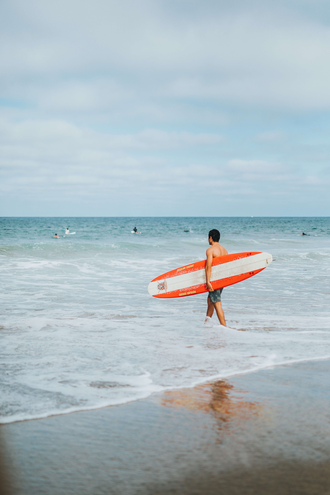

My name is Johnny and I Just Want to Surf

I used go against the flow. I used to resist life and wonder why things wouldn't just go my way. I would force myself to go along a path I thought was the right one.
Things were terrible. I had a job that I hated, a home that I didn't want to live in, and I couldn't hold a relationship.
How I turned things around
I learned what true stoke was. I learned how to surf and catching that first wave changed me.
It wasn't easy learning how to surf. You're in an entirely different element. I tried approaching surfing like I did my life...going against the flow and trying to force my way through.
Everything changed once I let go. I just went with it. I stood up on my first wave and rest was history.
Now I Just Go With the Flow
Ever since I learned how to go with what life throws at me, I'm in a much better place. There's no way to calculate what life is going to give you. You just have to be ready to go with it.
I made this blog to share my surfing journey and to remind my readers and life is too short to try and fight the natural flow of life. Just go with it and enjoy the ride!